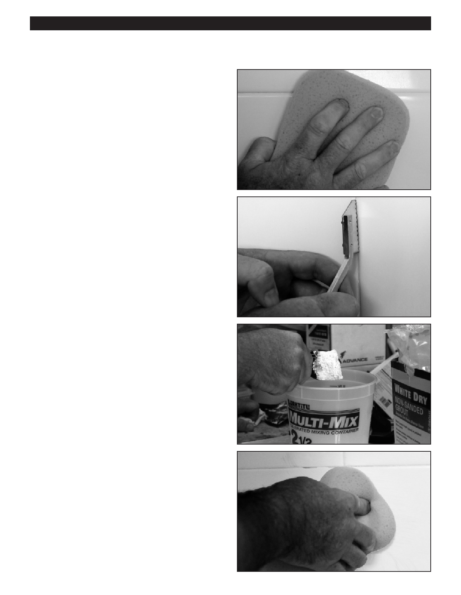

PA RT I C I PA N T R E S O U R C E G U I D E
Tile: Re-grouting Tile (continued)
How-to Steps
Step 1: Prepare the Area
1. Scrub the tile and grout thoroughly with a strong
household cleaner.
• If there is any mildew, scrub the tile joints with a
toothbrush dipped in bleach and rinse thoroughly.
2. Remove any damaged grout with a grout saw, putty
knife, or other sharp tool.
3. Vacuum up the mess.
Step 2: Apply Grout and Sealer
1. Mix grout according to the package instructions.
2. Scrub the area again, but this time, leave it damp.
3. Use a Grout Float to apply grout where needed,
wiping firmly.
4. Smooth the new grout with a clean, damp sponge.
5. Apply more grout as needed and smooth again, until
the tile joints are completely filled.
6. Apply more grout as needed and smooth again, until the
tile joints are completely filled. A “haze” of dried grouting
material will appear on the tile surface. Once this haze is
dry (not shiny anymore), remove with a clean terry cloth
towel. If this is done early you could save time on the
clean up by being able to omit step 7.
7. Scrub the tile with a clean cloth to remove any dried
grout.
8. Apply grout sealer.
28